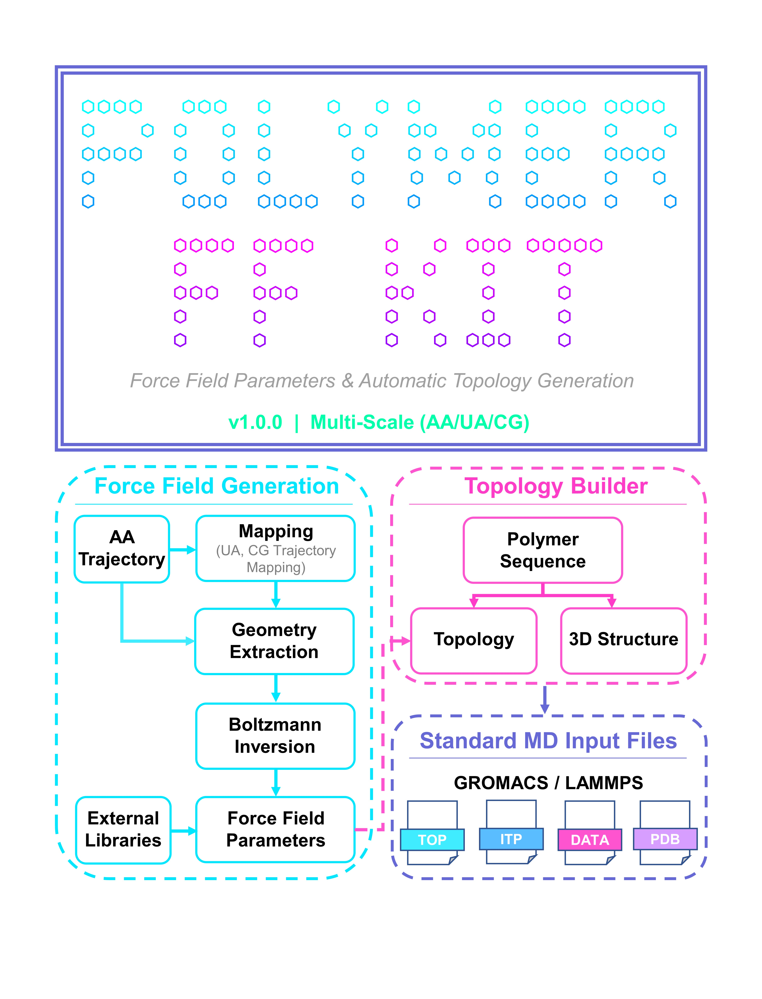

PolymerFFKit 中文手册
程序简介
PolymerFFKit 是面向高分子分子动力学模拟的交互式工具软件，覆盖轨迹映射、几何参数提取、玻尔兹曼反演拟合、非键参数分配、聚合物序列生成、三维结构与拓扑文件构建等流程。软件支持全原子（AA）、联合原子（UA）和粗粒化（CG）三种分辨率，并输出 GROMACS、LAMMPS 和 PDB 等常用格式。

运行环境
| 项目 | 要求 |
|---|---|
| 操作系统 | Windows 10/11 x64，Ubuntu 22.04+ x64，macOS 13+ Intel 或 Apple Silicon |
| 处理器 | Intel/AMD x86-64 或 Apple Silicon |
| 内存 | 建议 16 GB 及以上 |
| 可选软件 | GROMACS、LAMMPS、VMD、PyMOL，用于模拟验证和结构检查 |
安装与启动
Windows
解压 PolymerFFKit-v1.0.0-windows-x64.zip 后双击 PolymerFFKit.exe，或在 PowerShell 中运行：
.\PolymerFFKit.exe
Linux
tar -xzf PolymerFFKit-v1.0.0-linux-x64.tar.gz cd PolymerFFKit chmod +x PolymerFFKit ./PolymerFFKit
macOS
解压 Intel 或 Apple Silicon 版本后打开 PolymerFFKit.app。首次运行如遇系统拦截，请到“系统设置 - 隐私与安全性”中允许打开。
主界面与交互
1 Trajectory Analysis & Force Field Generation 2 Polymer Sequence & Topology Builder 0 Exit gracefully
- 输入菜单编号并按 Enter 进入功能。
- 文件路径输入支持 Tab 补全和拖拽文件。
- 带默认值的参数可直接按 Enter 使用默认值。
- 子菜单输入
-1返回上级，主菜单输入0退出。
模块一：轨迹分析与力场参数生成
Step 11：轨迹映射与提取
读取多帧 XYZ 轨迹，生成 AA 提取轨迹、UA 映射轨迹或 CG 映射轨迹。UA 支持自动氢折叠或自定义映射；CG 需要提供映射规则 JSON；COM 使用质量中心，COG 使用几何中心。
{
"custom_masses": {"C1": 12.011, "H1": 1.008},
"rules": [
{"name": "A", "atoms": [1, 2, 3]},
{"name": "B", "atoms": [4, 5, 6]}
]
}
Step 12：轨迹几何参数提取
根据距离截断自动构建邻接关系，并统计键长、键角和二面角。CG 可从 0.8 nm 左右开始测试，AA 可从 0.2 nm 左右开始测试。
Raw Analysis Data Dump (Grouped by Type) BOND_A-B: 0.3421,0.3510,0.3488 ANGLE_A-B-C: 112.4000,114.2000,116.0000 DIHEDRAL_A-B-C-D: -178.0000,60.1000,179.3000
Step 13：玻尔兹曼反演与拟合
读取直方图 CSV，计算 PMF 并拟合 bonded 参数。数据列名必须以 bond_、angle_ 或 dihedral_ 开头，且每个数据列前一列为对应 bin 坐标。
r_nm,bond_A-B,theta_deg,angle_A-B-C,phi_deg,dihedral_A-B-C-D 0.280,12,90,2,-180,1 0.300,45,100,8,-120,5 0.320,80,110,30,-60,18
Step 14：非键参数分配
整合映射单元、拟合结果、内置或自定义 ITP 力场库和外部电荷，输出 ff_unified_config.json。外部电荷文件格式如下：
A 0.000 B -0.100 C 0.100
模块二：聚合物序列与拓扑构建
Step 21：聚合物序列生成
根据单体类型、比例、聚合度和随机种子生成序列，并输出序列文件、组成分析文件和配置文件。
{
"seed": 42,
"number_of_sequences": 3,
"strict": true,
"residue": ["A", "B", "C"],
"ratios": [5.0, 3.0, 2.0],
"degree of aggregation": 100
}
Step 22：三维结构与拓扑构建
读取序列、统一力场配置和 ITP 文件，使用几何构建算法生成三维坐标，输出 CHAIN_1.pdb、CHAIN_1.data、CHAIN_1.itp 和 CHAIN_1.top。
>Sequence_1|Len:12 AABACBBCAABC >Sequence_2|Len:12 BBCACAAABBCA
模板文件
发布包的 templates 目录提供 XYZ 轨迹、映射规则、拟合 CSV、外部电荷、序列配置、统一力场配置和 GROMACS ITP 等模板。
常见问题
找不到内置力场库
请确认发布包中存在 data/ff_libraries，并保持该目录与可执行程序在同一发布包内。
Step 13 拟合失败
检查 CSV 列名、bin 列位置、有效数据点数量和 PMF 阈值。
Step 22 没有生成原子
检查序列符号是否与 atom_properties 或 atom_naming 一致。
许可、免责声明与联系方式
PolymerFFKit v1.0.0 采用二进制发布方式，公开仓库不发布源代码。软件面向学术研究和教学评估场景，使用者应自行验证模拟参数、结构和拓扑结果。第三方力场文件、科学计算库和外部软件遵循其各自许可和引用要求。
机构：浙江大学化学系
联系方式：tongshi@zju.edu.cn